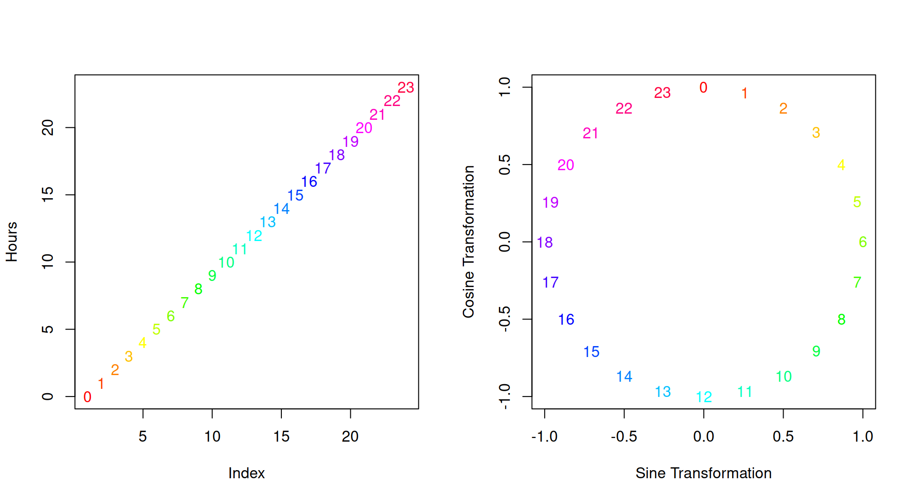
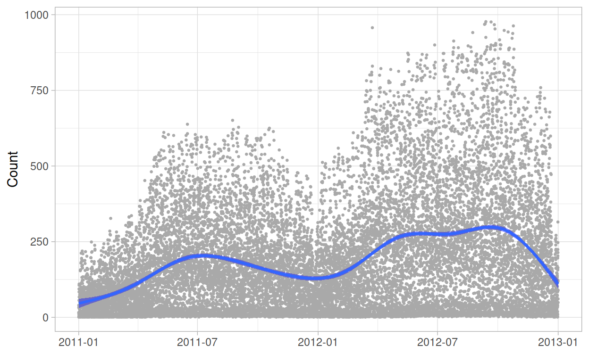
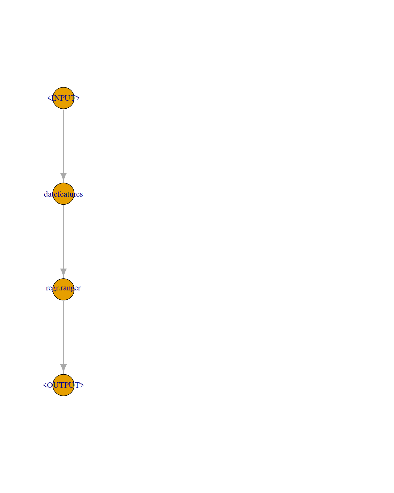

We show how to engineer features using date-time variables.
In this tutorial, we demonstrate how mlr3pipelines can be used to easily engineer features based on date-time variables. Relying on the Bike Sharing Dataset and the ranger learner we compare the root mean square error (RMSE) of a random forest using the original features (baseline), to the RMSE of a random forest using newly engineered features on top of the original ones.
A single date-time variable (i.e., a POSIXct column) contains plenty of information ranging from year, month, day, hour, minute and second to other features such as week of the year, or day of the week. Moreover, most of these features are of cyclical nature, i.e., the eleventh and twelfth hour of a day are one hour apart, but so are the 23rd hour and midnight of the other day (see also this blog post and fastai for more information).
Not respecting this cyclical nature results in treating hours on a linear continuum. One way to handle a cyclical feature \(\mathbf{x}\) is to compute the sine and cosine transformation of \(\frac{2 \pi \mathbf{x}}{\mathbf{x}_{\text{max}}}\), with \(\mathbf{x}_{\text{max}} = 24\) for hours and \(60\) for minutes and seconds.
This results in a two-dimensional representation of the feature:

mlr3pipelines provides the PipeOpDateFeatures pipeline which can be used to automatically engineer features based on POSIXct columns, including handling of cyclical features.
This is useful as most learners naturally cannot handle dates and POSIXct variables and therefore require conversion prior to training.
We load the mlr3verse package which pulls in the most important packages for this example. The mlr3learners package loads additional learners.
We initialize the random number generator with a fixed seed for reproducibility, and decrease the verbosity of the logger to keep the output clearly represented.
set.seed(7832)
lgr::get_logger("mlr3")$set_threshold("warn")
The Bike Sharing Dataset contains the hourly count of rental bikes between years 2011 and 2012 in Capital bikeshare system with the corresponding weather and seasonal information. The dataset can be downloaded from the UCI Machine Learning Repository. After reading in the data, we fix some factor levels, and convert some data types:
The Bike Sharing Dataset contains the hourly count of rental bikes between years 2011 and 2012 in Capital bikeshare system with the corresponding weather and seasonal information. We load the data set from the mlr3data package.
data("bike_sharing", package = "mlr3data")
Our goal will be to predict the total number of rented bikes on a given day: cnt.
skimr::skim(bike_sharing)
| Name | bike_sharing |
| Number of rows | 17379 |
| Number of columns | 14 |
| Key | NULL |
| _______________________ | |
| Column type frequency: | |
| character | 1 |
| factor | 2 |
| logical | 2 |
| numeric | 9 |
| ________________________ | |
| Group variables | None |
Variable type: character
| skim_variable | n_missing | complete_rate | min | max | empty | n_unique | whitespace |
|---|---|---|---|---|---|---|---|
| date | 0 | 1 | 10 | 10 | 0 | 731 | 0 |
Variable type: factor
| skim_variable | n_missing | complete_rate | ordered | n_unique | top_counts |
|---|---|---|---|---|---|
| season | 0 | 1 | FALSE | 4 | sum: 4496, spr: 4409, win: 4242, fal: 4232 |
| weather | 0 | 1 | FALSE | 4 | 1: 11413, 2: 4544, 3: 1419, 4: 3 |
Variable type: logical
| skim_variable | n_missing | complete_rate | mean | count |
|---|---|---|---|---|
| holiday | 0 | 1 | 0.03 | FAL: 16879, TRU: 500 |
| working_day | 0 | 1 | 0.68 | TRU: 11865, FAL: 5514 |
Variable type: numeric
| skim_variable | n_missing | complete_rate | mean | sd | p0 | p25 | p50 | p75 | p100 | hist |
|---|---|---|---|---|---|---|---|---|---|---|
| year | 0 | 1 | 0.50 | 0.50 | 0.00 | 0.00 | 1.00 | 1.00 | 1.00 | ▇▁▁▁▇ |
| month | 0 | 1 | 6.54 | 3.44 | 1.00 | 4.00 | 7.00 | 10.00 | 12.00 | ▇▆▆▅▇ |
| hour | 0 | 1 | 11.55 | 6.91 | 0.00 | 6.00 | 12.00 | 18.00 | 23.00 | ▇▇▆▇▇ |
| weekday | 0 | 1 | 3.00 | 2.01 | 0.00 | 1.00 | 3.00 | 5.00 | 6.00 | ▇▃▃▃▇ |
| temperature | 0 | 1 | 0.50 | 0.19 | 0.02 | 0.34 | 0.50 | 0.66 | 1.00 | ▂▇▇▇▁ |
| apparent_temperature | 0 | 1 | 0.48 | 0.17 | 0.00 | 0.33 | 0.48 | 0.62 | 1.00 | ▁▆▇▆▁ |
| humidity | 0 | 1 | 0.63 | 0.19 | 0.00 | 0.48 | 0.63 | 0.78 | 1.00 | ▁▃▇▇▆ |
| windspeed | 0 | 1 | 0.19 | 0.12 | 0.00 | 0.10 | 0.19 | 0.25 | 0.85 | ▇▆▂▁▁ |
| count | 0 | 1 | 189.46 | 181.39 | 1.00 | 40.00 | 142.00 | 281.00 | 977.00 | ▇▃▁▁▁ |
The original dataset does not contain a POSIXct column, but we can easily generate one based on the other variables available (note that as no information regarding minutes and seconds is available, we set them to :00:00):
bike_sharing$date = as.POSIXct(paste0(bike_sharing$date, " ", bike_sharing$hour, ":00:00"),
tz = "GMT", format = "%Y-%m-%d %H:%M:%S")

We construct a new regression task and keep a holdout set.
task = as_task_regr(bike_sharing, target = "count")
validation_set = sample(seq_len(task$nrow), size = 0.3 * task$nrow)
task$set_row_roles(validation_set, roles = "holdout")
To estimate the performance on unseen data, we will use a 3-fold cross-validation. Note that this involves validating on past data, which is usually bad practice but should suffice for this example:
cv3 = rsmp("cv", folds = 3)
To obtain reliable estimates on how well our model generalizes to the future, we would have to split our training and test sets according to the date variable.
As our baseline model, we use a random forest, ranger learner. For the baseline, we dropdate, our new POSIXct variable which we will only use later.
We can then use resample() with 3-fold cross-validation:
| iteration | task_id | learner_id | resampling_id | regr.mse |
|---|---|---|---|---|
| 1 | bike_sharing | regr.ranger | cv | 4543.904 |
| 2 | bike_sharing | regr.ranger | cv | 4276.996 |
| 3 | bike_sharing | regr.ranger | cv | 4767.763 |
We calculate the average RMSE.
rr_ranger$aggregate()
regr.mse
4529.554 We now want to improve our baseline model by using newly engineered features based on the date POSIXct column.
To engineer new features we use PipeOpDateFeatures. This pipeline automatically dispatches on POSIXct columns of the data and by default adds plenty of new date-time related features. Here, we want to add all except for minute and second, because this information is not available. As we additionally want to use cyclical versions of the features we set cyclic = TRUE:
pipeop_date = po("datefeatures", cyclic = TRUE, minute = FALSE, second = FALSE)
Training this pipeline will result in simply adding the new features (and removing the original POSIXct feature(s) used for the feature engineering, see also the keep_date_var parameter). In our task, we can now drop the features, yr, mnth, hr, and weekday, because our pipeline will generate these anyways:
task_ex = task$clone()
task_ex$select(setdiff(task$feature_names,
c("instant", "dteday", "yr", "mnth", "hr", "weekday", "casual", "registered")))
pipeop_date$train(list(task_ex))
$output
<TaskRegr:bike_sharing> (12166 x 32)
* Target: count
* Properties: -
* Features (31):
- dbl (23): apparent_temperature, date.day_of_month, date.day_of_month_cos, date.day_of_month_sin,
date.day_of_week, date.day_of_week_cos, date.day_of_week_sin, date.day_of_year, date.day_of_year_cos,
date.day_of_year_sin, date.hour, date.hour_cos, date.hour_sin, date.month, date.month_cos,
date.month_sin, date.week_of_year, date.week_of_year_cos, date.week_of_year_sin, date.year, humidity,
temperature, windspeed
- lgl (3): date.is_day, holiday, working_day
- int (3): hour, month, year
- fct (2): season, weatherNote that it may be useful to familiarize yourself with PipeOpRemoveConstants which can be used after the feature engineering to remove features that are constant. PipeOpDateFeatures does not do this step automatically.
To combine this feature engineering step with a random forest, ranger learner, we now construct a GraphLearner.
We create a GraphLearner consisting of the PipeOpDateFeatures pipeline and a ranger learner. This GraphLearner then behaves like any other Learner:
graph = po("datefeatures", cyclic = TRUE, minute = FALSE, second = FALSE) %>>%
lrn("regr.ranger")
graph_learner = as_learner(graph)
plot(graph)

Using resample() with 3-fold cross-validation on the task yields:
| iteration | task_id | learner_id | resampling_id | regr.mse |
|---|---|---|---|---|
| 1 | bike_sharing | datefeatures.regr.ranger | cv | 2521.642 |
| 2 | bike_sharing | datefeatures.regr.ranger | cv | 2229.746 |
| 3 | bike_sharing | datefeatures.regr.ranger | cv | 2254.390 |
We calculate the average RMSE.
rr_graph_learner$aggregate()
regr.mse
2335.259 and therefore improved by almost 94%!
Finally, we fit our GraphLearner on the complete training set and predict on the validation set:
Where we can obtain the RMSE on the held-out validation data.
prediction$score(msr("regr.mse"))
regr.mse
458.045